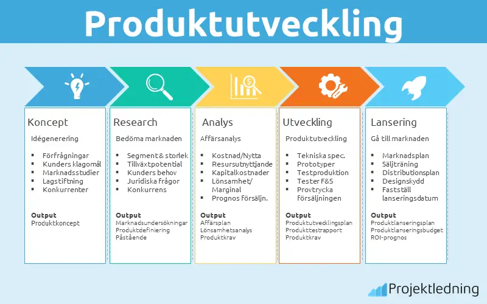
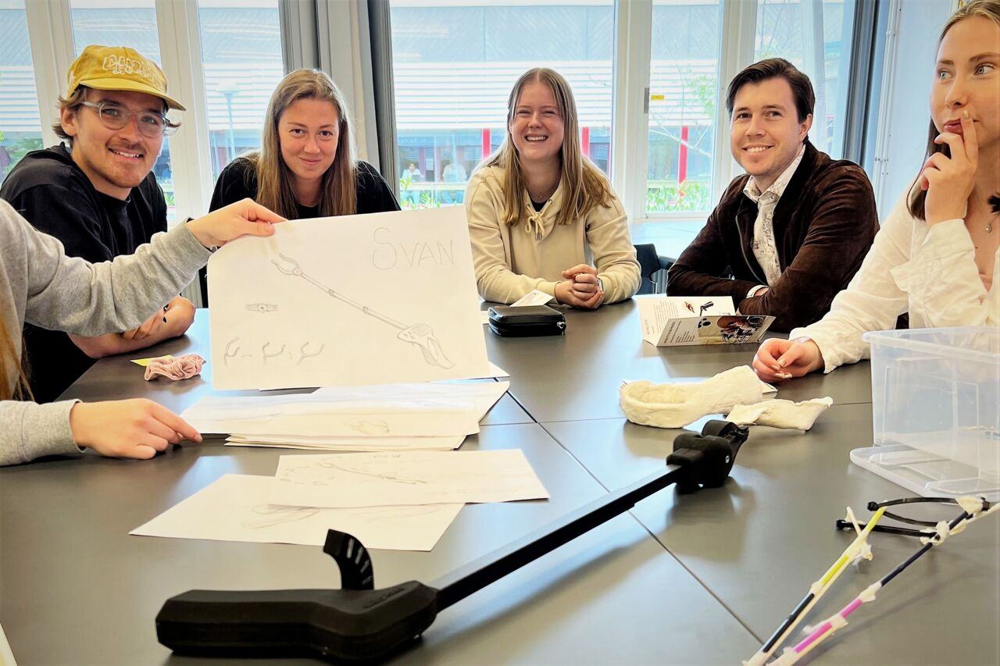

Design och produktutveckling
Design och produktutveckling är processen där man tar fram nya produkter eller förbättrar befintliga så att de fungerar bra, är hållbara och passar användarnas behov. Det handlar inte bara om utseende utan också om funktion, materialval och hur produkten ska tillverkas. I arbetet ingår att utveckla idéer, göra skisser och ritningar, ofta i CAD-program, samt att bygga och testa prototyper för att hitta den bästa lösningen. Målet är att gå från en enkel idé till en färdig produkt som faktiskt fungerar i verkligheten och inte bara ser bra ut på papper.



Konstruktion
Konstruktion är ett moment inom matematiken där man använder verktyg som linjal, passare och gradskiva för att rita geometriska figurer med bestämda egenskaper. Exempel på konstruktioner är att rita en triangel med givna mått, konstruera mittpunkten på en sträcka eller dela en vinkel i två lika stora delar.
Design
Design handlar om att skapa lösningar som är både funktionella och estetiskt tilltalande. Inom design arbetar man med att utveckla idéer, göra skisser och anpassa produkter efter användarens behov. Målet är att kombinera form, funktion och användarvänlighet för att skapa bra produkter eller tjänster.
Produktutveckling
Produktutveckling är processen att ta fram en ny produkt eller förbättra en befintlig. Arbetet omfattar flera steg, från att identifiera ett behov och skapa idéer till att bygga prototyper, testa lösningar och färdigställa produkten. Produktutveckling kräver kreativitet, problemlösning och kunskap om teknik, material och hållbarhet.